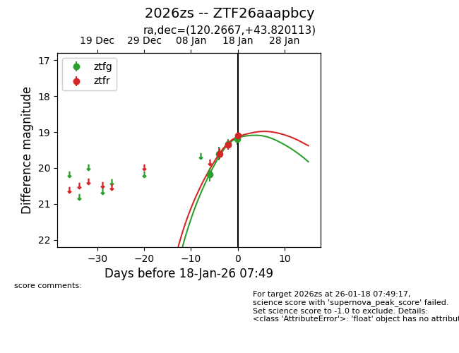
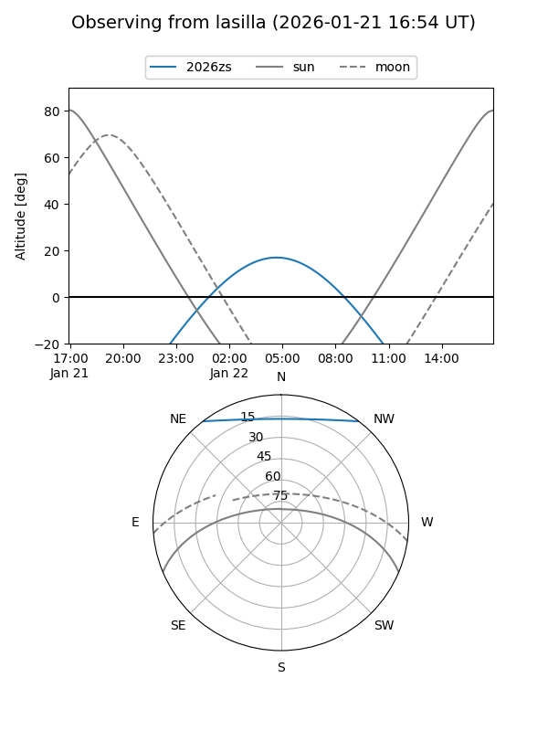
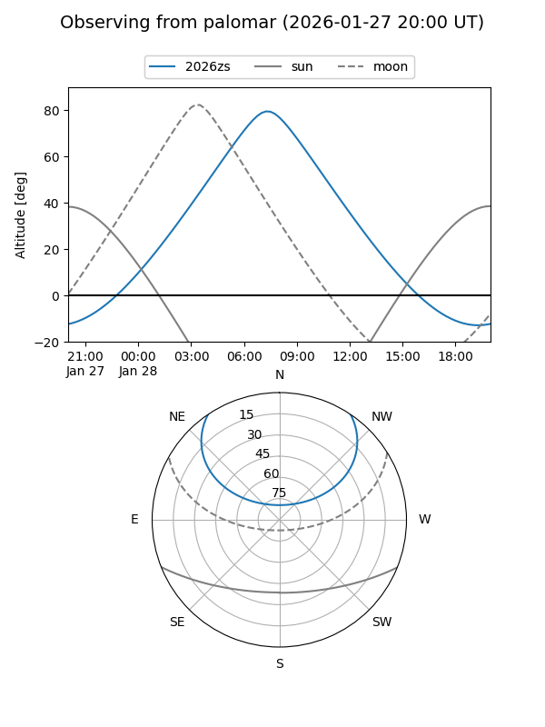
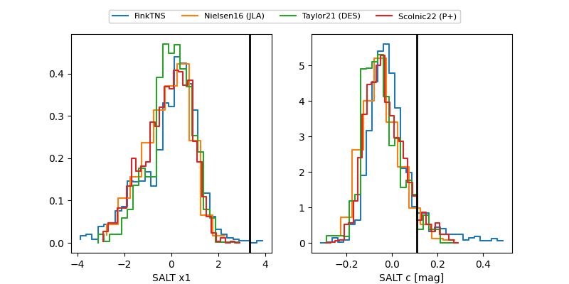

2026zs
Target 2026zs at 2026-01-28 07:01
Aliases and brokers:
FINK: link
Lasair: link
ALeRCE: link
TNS: link
YSE: link
alt names
ZTF26aaapbcy (ztf,fink_ztf)
2026zs (tns,yse)
Coordinates:
equatorial (ra, dec) = 120.2667,+43.82011
equatorial (HMS+DMS) = 08:01:04.02,+43:49:12.41
galactic (l, b) = (175.9851,+30.51912)
Flags:
Photometry:
last ztfg=19.00, ztfr=18.77
7 ztfg, 5 ztfr detections
Lightcurve

Visibility


Additional plots
